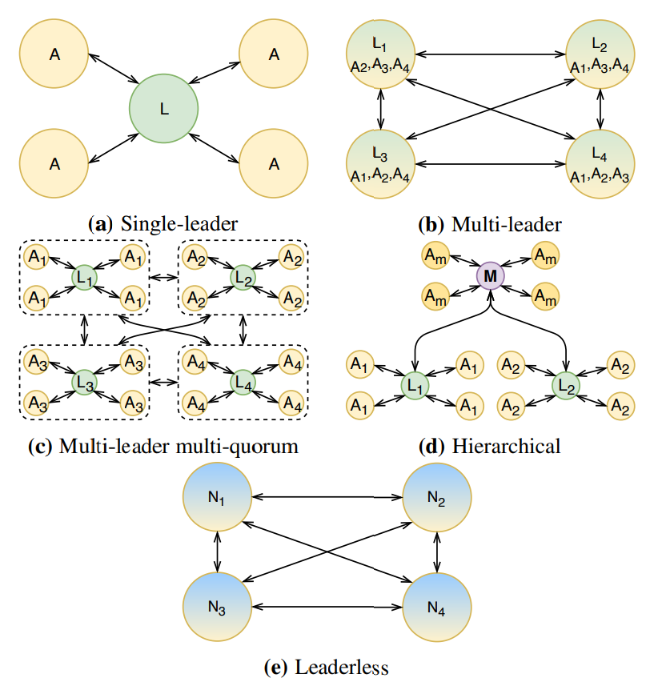
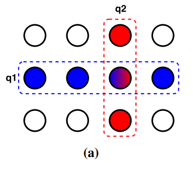
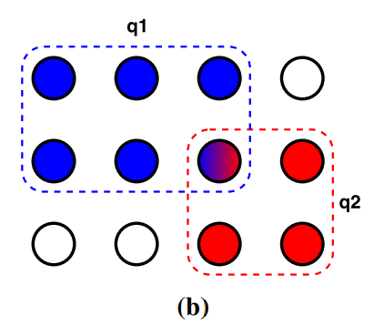
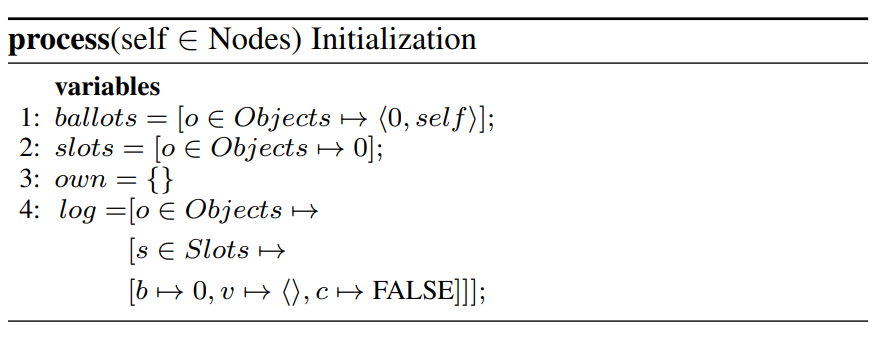
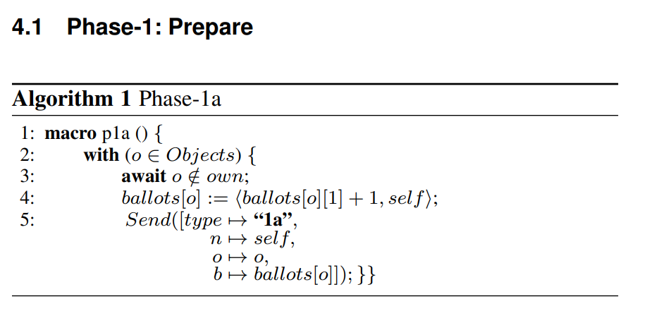
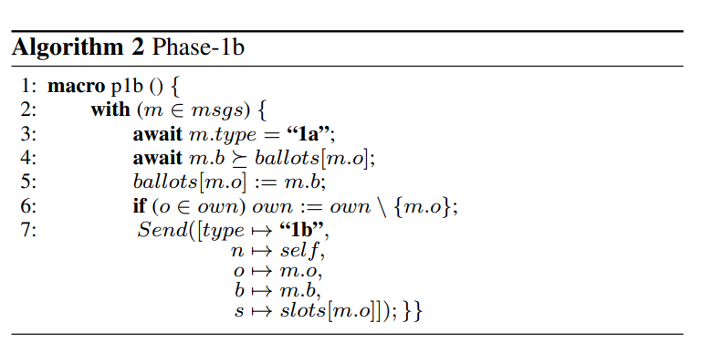
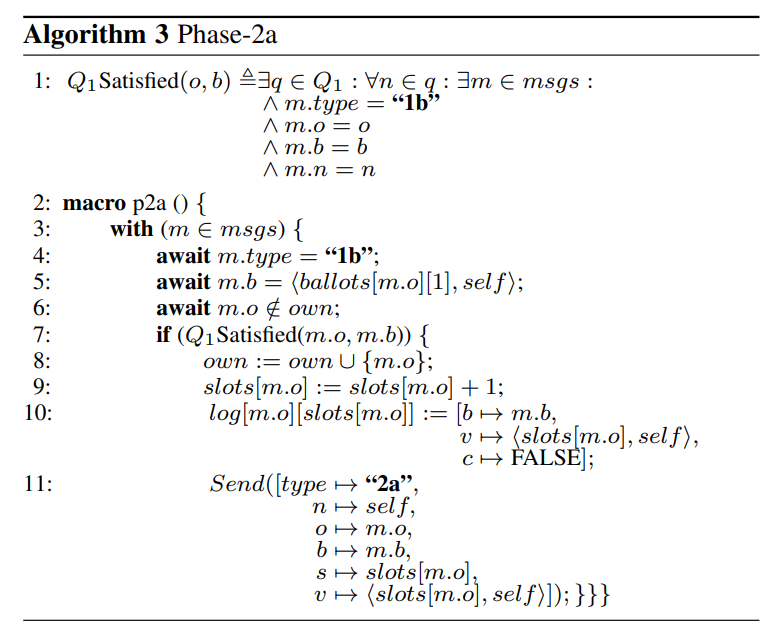
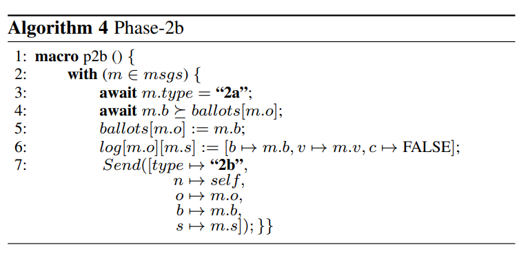
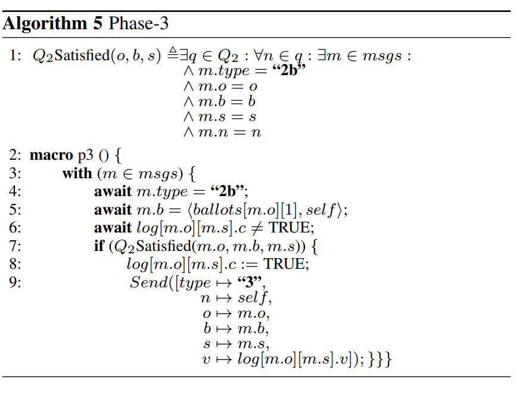

Abstract
WPaxos是一个多领导的Paxos协议，它可以在跨广域网的部署中提供低延迟和高吞吐的共识。WPaxos使用多个领导，在这些领导中划分object-space。不像静态划分的多Paxos部署，WPaxos能够适应不断变化的访问地点通过object stealing。多个同时存在于不同区域的领导人使用Paxos的第1阶段互相窃取对象的所有权，之后使用第2阶段在这些本地对象上提交更新请求指导他们被其他领导者窃取。为了实现快速的第二阶段提交，WPaxos采用了flexible quorum，并且差使二阶段的接受者靠近他们自己的领导者。
Introduction
Paxos即使在异步情况下也不会违反Safety,当我们加入一些Synchrony条件后，分布式共识的实现成为可能。Paxos和它的变体被广泛部署和应用，但是这些实现都依赖于一个中心化的主进程去序列化所有命令。由于对主进程的依赖，这些Paxos实现们支持本地部署，但不能在跨广域网时应对写密集场景。但是跨广域网协调变得重要。
要解决的问题：为了消除Paxos的单领导实现在跨WAN部署中带来的延迟瓶颈！，leaderless和multileader解决方案被提出。
Leaderless: EPaxos是Paxos协议的一个无领导的扩展，任何区域的任何副本都可以投机地提出和提交命令，只要这些命令是无干扰的（挖个坑之后还得读这个！）但EPaxos要求约有3/4的接受者组成quorum,这意味着WAN延迟仍然会发生。而且，如果如果多个并发的投机的提议者提出相互干扰的指令，协议要求执行第二个阶段去记录所获得的依赖性，并且需要得到大多数的认可。
Multileader: 另一个方式去消除单个领导者瓶颈是使用在每个zone中部署独立的Paxos组。一些系统比如Google Spanner…使用的是全球的object-space的静态划分进不同的zones,每个领导者负责object-space的一个分片。然而这样的静态划分是不灵活的，在访问/更新映射到不同区域的object时，将持续产生广域网延迟。
为了解决这个问题做出的贡献：提出WPaxos，一种多领导者Paxos协议在跨WAN部署中提供低延迟和高吞吐的共识
利用flexible quorums去消减WAN通信的成本，以一种新颖的方式部署了flexible quorums，在广域网上任命多个并发的领导人。在这些multileader间划分object-space，将允许协议在不同并发的领导者处理对于object的请求。每个object维护他们自己的提交日志，从而允许per-object linearizability。通过有策略地选择第二阶段靠近领导的接受者。 WPaxos实现了快速提交决定。 在另一方面，WPaxos有区别于现在的静态划分的多Paxos部署解决方案，因为它实现了一个动态的划分方案： 在不同区域的领导者使用Paxos的第一阶段从对方那里窃取一个对象的所有权/领导权，然后使用第二阶段在本地提交对象的更新请求，直到该对象被另一个领导者窃取。
Related Work
文章对Paxos协议家族进行了根据建筑学进行的分类：
1. 单领导协议： Multi-Paxos和Raft依赖单个节点去推动进步
2. 多领导协议： 不是所有命令都要求在系统中存在一个total order，多领导算法可以在不同的领导处并行地运行许多指令，只要这些命令属于不同的冲突域。这也使得每个领导者节点通常也作为另外一个conflict domain的接受者不能提供全序，但可以在同一个conflict domain中提供偏全序
3. 多领导，多quorum协议: WPaxos更进一步，允许不同的领导者使用不同的quorum,只要quorum内部的通信能保证要求的安全属性
分层的多领导协议： 高阶领导者监督和协调低阶的孩子领导者，master quorum负责与children quorum不同的工作。
4. 无领导协议： 不在节点间强加conflict domains的划分，而是投机地提交任何命令在任何节点。任何节点在EPaxos中都能为一个命令成为一个投机的领导者，并且通过在一个fast quorum system中运行一个两阶段Paxos去尝试提交它。如果一些其他节点在fast quorum中也正在尝试提交一个冲突的命令，那么一个额外轮次的通信被用来为冲突的命令排序。

WPaxos Overview
假设有一组节点通过消息传递进行通信。节点被部署在一组zone中，zone是可用隔离单元。每个节点维护一系列根据递增slot number排序的instance。每个instance与一个ballot号码一起进行提交。每个ballot有一个独特的领导，且是由整数和其领导标识符组成的pair。因此，选票号码是唯一的，而且是完全有序的，任何节点都可以很容易地从给定的选票中检索到领导者的id。
WPaxos Quorums
WPaxos使用了flexible quorums的主意。这一结果表明，我们可以将Paxos的 “所有的quorum都应该相交 “的断言弱化为 “只有来自不同阶段的quorum应该相交” 如果第一阶段的quorum与第二阶段的quorum相交，那么majority quorum不是必须的。假设失败和领导者的改变是罕见的，那么负责告诉接受者决定值得第二阶段将会比第一阶段更频繁，因此通过减小phase2的quorum size来提升性能，为此付出的代价是将phase 1的quorum size增大。

定义1： 一组节点上的quorum系统是安全的，如果用于phase1和phase2的quorum是相交的
WPaxos在WAN的部署中采用了flexible quorums的主意。采用grid quorum layout，好处是Q1+Q2不需要超过N, (在flexible quorum里是需要超过N的）
每一列代表一个zone（一个可用单元或者地理隔离）所有zone的集合组成一个grid。
我们引入两个新变量：
f_z系统可以容忍的zone故障数量
f_n一个zone失去可用性前可以容忍的节点故障数量
为了在每个zone中容忍f_n个崩溃故障，WPaxos在l个节点中挑选f_n+1个节点。除此以外，为了在z个zones中容忍f_z个的zone故障，phase-1的quorum从（z - f_z）中选取，phase-2的quorum从（f_z + 1）个zone中选取。这可以保证Q1和Q2总是有交集。

这个图是WPaxos的一个部署例子，我们可以看到提高了容错，因为在之前的部署中如果一个zone中有节点故障，我们就不能收集足够的vote，代价是需要收到的vote数量也增加了。
Multi-leader
WPaxos基于flexible quorums上提出了多领导协议。WPaxos中的每个节点都能成为一部分object的领导者，这允许协议并行地处理对属于不同领导者的object的请求
WPaxos协议由两个阶段组成：
Phase1 并发的领导者stealQ1中的object的所有权/领导权
Phase2 提交更新请求到Q2的object
phase1只有当节点需要从远端领导者steal一个object或者客户有一个对于不在系统中的全新object的请求时才会执行。该算法的这一阶段会使所涉及的对象的ballot增长。当一个节点成为object的拥有者时，它可以多次执行phase2来提交指令和更新，在每次迭代中增加slot数字，但是保持对象的ballot不变。
Object Stealing
当一个节点为了执行用户的请求需要从另一个领导者steal一个object时，它首先需要先咨询它的内部ca这个object最后使用的ballot number以及用一个更大的ballot执行phase1。对象窃取是成功的，如果候选节点能够out-ballot当前的节点。只要本地缓存是最新的，并且远程领导没有在同一obejct上进行另一个phase1，那么我们只需要一次尝试。
一旦object被盗，老领导者就不能再对它进行任何操作了。object被盗可能发生在object的一些命令仍在进行中的时候，因此，新的领导者必须恢复任何已接受的，但尚未提交的命令。
WPaxos为所有object维护独立的ballot，以隔离object偷窃的影响。保留每个领导者的ballot，即为领导者维护的所有object保留一个ballot，在试图窃取一个ballot时，将需要投票出远程领导者的所有object(这里没太懂)，这会造成决斗，这么做可以减轻决斗，虽然不可避免。还补充了两个方法减轻决斗1.发生ballot冲突时通过nodeID和zoneIDj解决。2.发生决斗时REB。
WPaxos Algorithm
每个节点维护一组变量和在log中写入的一系列指令，指令能够允许失序提交，但是在状态机上的执行必须使同一个顺序，每个指令仅仅接触一个object，每个节点维护一个它自己领导的对象集合叫做own。Ballot由计数器和节点ID组成；slot初始为0；拥有的object初始化为空；一个log实例包含一下信息：ballot，proposed value和一个flag标志这个实例是否已经被提交了。

Phase-1: Prepare
当接收到用户的请求时，节点会检查是否object存在在自己的own集合中，如果没有，执行p1a()，如果已经存在则可以直接执行phase-2。在p1a()中，一个更大的ballot被选择并且这个"1a"消息被发送到Q1 quorum。

p1b()负责处理收到的1a，一个节点能够接受一个发送者作为object o的领导，当且仅当这个发送者的object的ballot等于或大于自己已知ballot；如果这个object属于当前节点，哪么还要将这个object从own中移除。最后发回的1b中还要附带关于object的最高ballot，帮助新领导者提交所有为解决的命令。

Phase-2: Accept
当完成Phase1，或者确定无需对给定的object进行Phase1后，WPaxos可以对就近的F+1个zones执行Phase2。
p2a()中收集1b消息，当Q1 quorum满足时节点成为新领导。新领导使用建议的值恢复所有未提交的slot，并且通过增加最高的slot为自己pending的请求值开始Phase2，同时在log中创建一个新的entry,之后发送2a消息。

p2b中，接受者收到2a消息后在检查了ballot以后，更新log中2a消息中对应的slot。之后发回2b消息给领导者。

Phase-3: Commit
领导在从Q2的接受者处收集了回复后。请求要么在满足了Q2 quorum的情况下被提交了，要么在有一些接受者以收到了更高的ballot为由拒绝提议而被舍弃了。在被拒绝的情况下，节点会更新本地ballot，并将该slot中的实例请求放回主请求队列，以便 稍后重试
